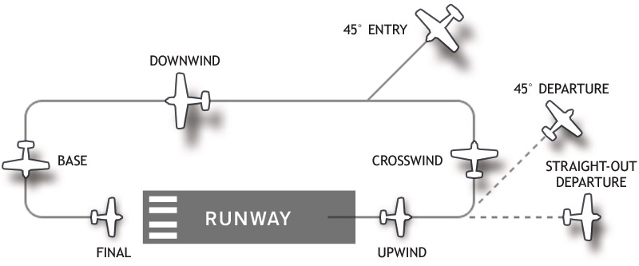

Understand your bird before you spin her up. There are multiple resources for this. Some of the more important questions to ask:
The E key is usually bound to the automated start up. Initiate startup and enjoy the show.
For the purposes of this guide we will assume the use of the BF 109 F4. This plane is used by the FFS for it's overall ease of management and use. Many of the systems that would have to be individually managed in other aircraft are automated in the 109.
Before Take-off in the Bf-109 make sure you have your canopy closed and your tail wheel locked. You will need to straighten out your tail wheel for it to actually lock in place. Set your flaps to 20° by extending them until you see two black lines on the flaps on your left wing. Trim your aircraft nose down to +1 on the adjustable stabilizer so that your tail wheel will lift off the ground at the appropriate speed.
The Bf-109 has a clockwise rotating propeller when viewed from the cockpit. Due to torque, gyroscopic precession and various aerodynamic effects the plane will have a tendency veer left during take-off. To compensate for this you will need to apply right rudder pressure throughout take-off.
If you are taking off as part of a flight of aircraft make sure to count 6 seconds before following the aircraft in front of you. When you are ready to go, check that the runway is clear and then slowly throttle up to full power. By throttling up slowly you reduce the amount of torque on your aircraft and thus, the amount of compensation needed to stay straight during take-off.
You can rotate at 180 km/h. As soon as you have established a steady climb rate, retract your gear and flaps and reduce your throttle to 1.1 ata or whatever your section leader calls it out to be.
The landing pattern is a basic concept that you will find spans all aviation. There are multiple forms but most can be distilled into the following steps:
I find it easy to remember by saying "Up to Down" with a "Cross" between up and down. The naming is meant to be self explanatory with the primary assumption being you are landing into the wind. You can either fly your upwind keeping the airfield to you left or you can fly directly over it. Enter the pattern at and altitude of about 500 to 1000 meters. The image below is a good example of a "traffic pattern":
The pattern is an excellent way to bleed off speed and to take time to configure your plane for landing. It also allows you to asses the current traffic situation of the airfield. If you see at any point you will not be able to land you can indefinitely hold "in pattern" until the runway is clear.
Landing can be a challenging process. You basically want to: